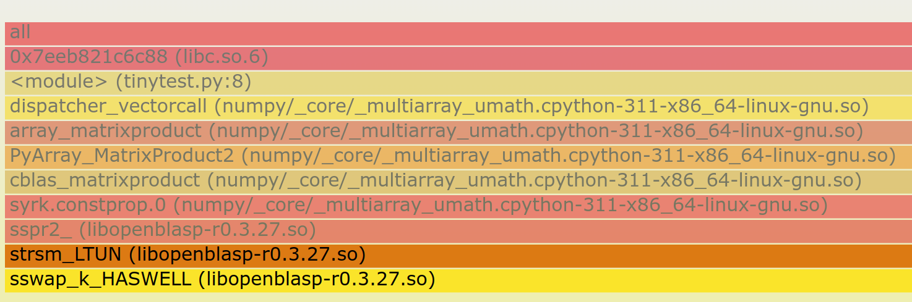
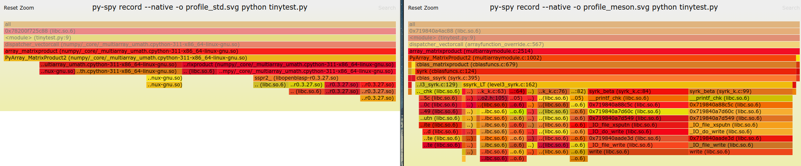
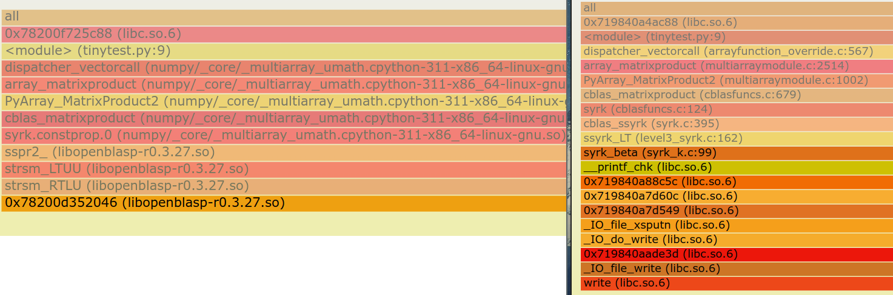

pyspy tracing#
Similar to perf usage, but with more context on the Python side, the sampling
profiler py-spy (Git Repo) supports tracing native extension calls.
However, as a sampling profiler a lag is needed.
Consider:
import numpy as np
import time
np.random.seed(128)
C_float = np.random.rand(4,4).astype(np.float32)
np.dot(C_float, C_float.T)
This will not generate any samples in the region of interest, since it is over
too quickly. Adding time.sleep(0.01) will allow for some samples, which is
good enough.
py-spy record --native -o profile.svg python tinytest.py
However, only the SVG format actually generates the trace needed, which can be interactively viewed. The view itself is nice and clear on what gets called when, so that’s nice.

It is easier to visually diff two builds:
py-spy record --native -o profile_meson.svg python tinytest.py
py-spy record --native -o profile_std.svg python tinytest.py
With:
#!/usr/bin/env python3
import numpy as np
import time
np.random.seed(128)
C_float = np.random.rand(4,4).astype(np.float32)
time.sleep(1)
for _ in range(50000):
np.dot(C_float, C_float.T)
Yields

Or zoomed into the appropriate region:

Where the cruft is because of printf debugging.